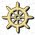
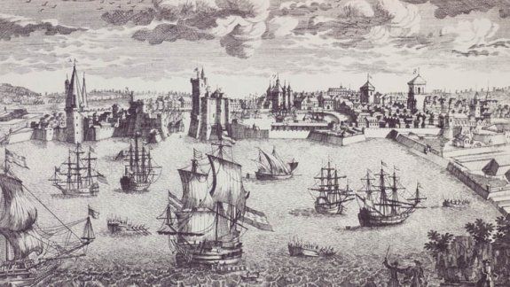

|
English


SIGNEZ
MON LIVRE D'OR
LIENS
| |
|
|
| AVANT LE DÉPART DE LA ROCHELLE |
| Au printemps 1647, peu de temps après
leur mariage, Mathieu et Sébastienne se préparent à immigrer en
Nouvelle-France, et ce dans des conditions qui ne s'annoncent pas
faciles.
Une distance de 1,200
lieues sépare le port de La Rochelle de celui de Québec. Le
voilier peut les parcourir en environ neuf semaines. Mais tout dépend du vent: s'il
fait défaut au cours du voyage, rien à faire, sinon attendre qu'il
reprenne. Ce qui peut prendre une semaine ou deux, parfois plus.
Or, tout ce qui augmente la durée du voyage en augmente aussi les
risques.
Un capitaine de navire écrira en
1716: "J'ai été sept fois au Canada et quoique je m'en sois bien
tiré, j'ose assurer que le plus favorable de ces voyages m'a donné
plus de cheveux blancs que tous ceux que j'ai faits ailleurs."

Le navire est à quai dans le bassin du
port, toutes voiles enroulées. Il y a une grande animation,
beaucoup de gens vont et viennent, occupés au chargement.
Les autres voyageurs arrivent à La
Rochelle, ils viennent de Paris ou d'autres provinces, la plupart à
pied, certains en carrosses. Paris est à 380 kilomètres, mais on
voyage beaucoup à pied à cette époque. Ces voyageurs attendent
le départ du navire dans des auberges. Il arrive que de jeunes
engagés fassent de si joyeux tintamarres que les autorités les
enferment à l'Hôtel de Ville jusqu'au dernier moment.
Pour des gens ordinaires comme Mathieu
et Sébastienne le coût du voyage se situe dans les 75 livres chacun
(plus d'un an de salaire pour un engagé), et, pour ce prix-là, ils
n'ont droit qu'au service minimum. Il est préférable qu'ils
emportent des provisions les moins périssables et les plus
nourrissantes possible.
|
|
|
| VISITONS LE NAVIRE |
|
Le navire n'est pas très grand, il fait
environ 37 à 50 mètres de long par 8 à 15 mètres de large.
Généralement, il y a entre 100 à 300 passagers qui s'entassent dans
l'entrepont pendant tout le voyage.

LA CALE
Des pierres dans des paniers d'osier
bien fixés, c'est le lest qui assure la bonne tenue du navire sur
l'eau. Aussi des barils de poudre bien arrimés, tout
vaisseau étant muni de canons pour se protéger en mer. Donc
pendant de longs mois, Mathieu et Sébastienne vont vivre sur une
poudrière.
Au-dessus il y a le capharnaüm, soit
les bagages des passagers ou divers articles à livrer à la colonie.
Il y a aussi les réserves de vivres. Le code maritime oblige le capitaine à faire embarquer
pour chaque passager 60 rations et 2/3 de barrique d'eau (66 litres),
soit de quoi vivre pendant 60 jours. Au menu: "biscuit de
matelot", du lard, des pois, de la morue salée ou sèche, du
harang, de l'huile d'olive, du beurre, de la moutarde, du vinaigre, du
vin, de l'eau-de-vie et des fruits confits. Si l'on veut autre
chose, faut l'ajouter à ses bagages.
Dans tout cela les boissons sont
importantes. Comme l'eau douce devient vite fermentée, visqueuse
et garnie de petites larves, on embarque du cidre, remplacé le dimanche
par du vin.
En tout cas, Mathieu et Sébastienne
auront de quoi manger et boire, à condition que la traversée ne prenne
pas plus de deux mois. En 1662, un navire prendra près de quatre
mois et quarante passagers mourront de faim et de soif.
L'important dans la cale est que rien ne
bouge: tout le poids du lest, des barils de poudre, des marchandises
doit être bien réparti sinon le navire chavire et coule à pic. |
|
L'ENTREPONT OU LA "SAINTE-BARBE" |
| Pour le capitaine et les dignitaires, il
y a quelques cabines, mais pour les passagers il n'y a que l'entrepont. Pour ces derniers, pas de places réservées: les
plus chanceux couchent dans des hamacs, les autres à terre.
L'entrepont est
exigu, pas tellement plus haut qu'un mètre soixante. Les passagers ne
peuvent donc pas se tenir debout, ils doivent être constamment courbés.
Ils ne peuvent pas non plus se déplacer à l'aide d'une chandelle à
cause des risques d'incendie et sont contraints de rester dans l'obscurité. L'endroit ne comporte presque pas d'ouvertures, l'air est
vicié et la puanteur abominable. La nuit, les passagers dorment dans le
froid et l'humidité, au mieux sur des hamacs qui suivent le roulis des
vagues, au milieu des rats et des râles de ceux qui sont malades.
Une cloison sépare ce dortoir
d'une autre partie de l'entrepont où se trouve l'écurie, soit les animaux que l'on
envoie dans la colonie, et dont une partie va finir sur la table du
capitaine et de ses invités. Les odeurs et les bruits provenant des
animaux sont faciles à imaginer.
Il n'y a pas de salle à
manger. Les simples passagers mangent là où ils sont quand c'est
l'heure du repas. Aucun système de chauffage non plus.
L'unique poêle est réservé à la cuisson des aliments et, si le
navire est trop secoué, on mange froid.
C'est un désordre de personnes
et de bagages, on se marche littéralement dessus, et ce, pour des
semaines.
Le Jésuite Nau écrira en
1734: "La seule vue de la Sainte-Barbe où nous devions
coucher pendant la traversée nous déconcerta tous [....]
Nous étions pressés dans ce lieu obscur et infect comme des
sardines dans une barrique. Nous ne pouvions nous rendre à nos
lits sans nous heurter vingt fois la tête et les jambes. La
bienséance ne nous permettait pas de nous déshabiller".
|
|
|
|
 |
| LE COUP DE PARTANCE |
| Les passagers s'installent tant bien que
mal puis redescendent à terre pour les derniers achats, ou saluer la
famille, ou entendre une dernière messe.
Quand le vent est favorable un roulement
de tambour avertit que le navire va se détacher du quai pour gagner la
rade, première étape avant de prendre la mer. On déploie
certaines voiles, tout le monde se rembarque, on tire du canon: c'est le
coup de partance.
 Le navire sort lentement du port, le
vent le pousse en rade. Le navire sort lentement du port, le
vent le pousse en rade.
Mathieu et Sébastienne commencent à voir
la mer. Mais tout peut s'immobiliser là si le vent tombe et le
navire peut rester ainsi, face à la ville, un jour ou deux. Puis
quand le vent revient, il gagne la haute mer après être passé près
de l'île de Ré. |
| LES DANGERS DE LA TRAVERSÉE |
| Les passagers sont confinés dans la Sainte-Barbe, et, les jours de
tempête, ils ne peuvent même pas aller sur le pont. Ils
respirent continuellement les odeurs de toute cette foule qui ne
se lave à peu près pas et ne change pas de vêtements, ainsi que les
odeurs de l'écurie voisine. Le plancher de l'entrepont est
rarement nettoyé. Une fille du roi, en 1664, se plaindra des
conditions déplorables d'une traversée de 87 longs jours, et
témoignera que l'eau de mer ramène les excréments des animaux dans
l'entrepont. En 1756, le Léopard arrivera chargé de
soldats malades et se plaignant que le plancher de l'entrepont n'a été
nettoyé qu'une fois en deux mois.
 L'eau de mer est à 10 degrés Celsius, elle mouille tout, les
couchettes, les vivres. Une humidité constante glace les
gens. Le navire craque de toutes parts, le mouvement et le
bruit sont incessants. L'eau de mer est à 10 degrés Celsius, elle mouille tout, les
couchettes, les vivres. Une humidité constante glace les
gens. Le navire craque de toutes parts, le mouvement et le
bruit sont incessants.
LES
MALADIES
La plupart des passagers, n'ayant pas le pied marin, souffrent du
mal de mer. Mais
il y a aussi d'autres maladies qui se développent comme le scorbut, la
variole, la rougeole, la dysenterie mais surtout le typhus qu'on appelle
la "maladie des navires ou fièvre pourpre" . Elles sont souvent
dues à un manque d'hygiène. L'eau douce étant limitée sur le navire,
les passagers ne se lavent pas et la promiscuité dans laquelle ils
vivent accélère la propagation de la maladie. Il est fréquent qu'un
simple rhume se transforme en véritable épidémie.
Il faut dire que l'alimentation n'aide pas à reprendre du mieux.
On se nourrit à même les
provisions de lard salé et de poisson fumé tout en espérant faire
bonne pêche. Lorsqu'on ne peut pas avoir de viande, on mange des
potages de semoule de blé, d'avoine, de pois ou de maïs. On apporte
aussi un bon nombre de galettes qu'on ingurgite au bout de vingt ou
trente jours même quand elles sont piquées de vers. L'eau douce, quant
à elle, est contenue dans de grands barils de bois, mais au fil de la
traversée elle devient brunâtre et de petites larves apparaissent à
la surface. Les passagers sont obligés de la boire, quelquefois en se
pinçant le nez, tellement elle sent mauvais. Plus la traversée
se prolonge, plus l'eau est rationnée.
Dans ces conditions la mortalité
est fréquente. Les historiens estiment qu'il meurt au moins 10% des
passagers par traversée, mais c'est souvent plus. Dans les cas
extrêmes il peut arriver que les personnes utiles pour la navigation du
bateau soient à peine suffisantes. En 1732, des 154 personnes à
bord d'un navire, il en succombera
une bonne centaine. Les morts sont enveloppés dans un
drap et jetés à la mer, avec un boulet de canon attaché aux pieds.
LES
TEMPÊTES
 Parmi
les lugubres histoires que savent les flots, il y a les tempêtes.
Dans toute l'histoire de la colonie il y a plusieurs cas de navires
subissant des tempêtes qui les ont fait sortir de leur route ou
échouer. Dans ces accidents, le navire peut
disparaître corps et biens. L'exemple le plus célèbre est celui
du Chameau qui, en face de Louisbourg, alors que tous se
réjouissent d'une bonne traversée, subit une tempête: le navire se
brise contre les battures, 316 passagers périssent et un trésor de
300,000 livres est perdu (des plongeurs en récupéreront une petite
partie en 1970). Parmi
les lugubres histoires que savent les flots, il y a les tempêtes.
Dans toute l'histoire de la colonie il y a plusieurs cas de navires
subissant des tempêtes qui les ont fait sortir de leur route ou
échouer. Dans ces accidents, le navire peut
disparaître corps et biens. L'exemple le plus célèbre est celui
du Chameau qui, en face de Louisbourg, alors que tous se
réjouissent d'une bonne traversée, subit une tempête: le navire se
brise contre les battures, 316 passagers périssent et un trésor de
300,000 livres est perdu (des plongeurs en récupéreront une petite
partie en 1970).
LA
CAPTURE
Parmi les autres périls de la mer, le
navire peut être capturé. En temps de guerre, cela va de
soi et plusieurs navires en direction de la Nouvelle-France sont
capturés par l'Angleterre, ce qui crée famine et pénurie de biens
dans la colonie, trop
dépendante de la mère-patrie. Mais en temps de paix, le
risque de capture existe aussi car pirates et corsaires sont aux
alentours.
Les corsaires sont d'honnêtes
gens qui ont un permis du roi pour s'emparer de navires étrangers: le
bateau est à celui qui s'en empare, avec tout son contenu, mais on a
affaire en ce cas à des militaires de carrière qui connaissent les
manières. Le pirate travaille sans permis, à son propre
compte et ne connaît aucune loi. Dans les deux cas les passagers
ne sont pas plus avancés: tout ce qu'ils possèdent (malles, linge,
bijoux, provisions) passe au vainqueur, qui revend tout dans un port ou
jette à la mer ce qui ne fait pas son affaire. Les prisonniers
sont mis à la rançon et attendent, la plupart des fois aux Antilles,
que leurs familles réunissent l'argent nécessaire.
Ces captures ou ces naufrages ruinent
les voyageurs qui transportent avec eux beaucoup de biens et sont un
désastre dans la colonie pour qui tout arrivage est important.
|
|
|
| LA SUITE DU VOYAGE |
| Il semble que rien de trop
fâcheux n'arrive
lors de la traversée de Mathieu et Sébastienne.
Pour tromper l'ennui, les
matelots organisent parfois des fêtes sur le pont. Ils jouent de
la musique et les passagers participent à la danse. Dans la
journée, ils se promènent sur le pont, parlent entre eux, les
plus instruits lisent ou écrivent. Les hommes s'adonnent à des jeux de
hasard : cartes, dés, échecs ou dames.
Mais la plus grande distraction
de la traversée reste sans aucun doute le baptême qui a lieu
sur les Grands Bancs, dans les environs de Terre-Neuve. La majorité des
passagers qui traversent l'Atlantique pour la première fois doivent
payer une obole sans quoi on les jette dans un baquet plein d'eau.
Quand on rencontre un iceberg, certains partent en chaloupe à sa
rencontre et grimpent sur ce glacier cueillir de l'eau douce.
Quand la mer est calme, il s'en trouve pour se baigner en plein océan,
pour le plaisir et non pour la santé, car les effets bénéfiques du
bain de mer ne sont pas encore reconnus. |
| ENFIN LE GOLFE SAINT-LAURENT |
 Enfin, après deux mois en
moyenne de traversée en haute mer, les passagers aperçoivent les
côtes du golfe Saint-Laurent. Il ne faut pas se réjouir trop
tôt: Québec est encore très loin et c'est en entrant dans le
golfe que le péril est peut-être le plus grand. Il est très
dangereux pour la navigation: bourrasques inattendues, brouillards très
fréquents, récifs nombreux. À cause de ses eaux tumultueuses, ceux
qui n'ont pas eu le mal de mer pendant la traversée, le subissent
presque toujours en y arrivant. Enfin, après deux mois en
moyenne de traversée en haute mer, les passagers aperçoivent les
côtes du golfe Saint-Laurent. Il ne faut pas se réjouir trop
tôt: Québec est encore très loin et c'est en entrant dans le
golfe que le péril est peut-être le plus grand. Il est très
dangereux pour la navigation: bourrasques inattendues, brouillards très
fréquents, récifs nombreux. À cause de ses eaux tumultueuses, ceux
qui n'ont pas eu le mal de mer pendant la traversée, le subissent
presque toujours en y arrivant. |
| LE NORDET |
| Le voyage est encore long. Du
Cap-Breton à Québec, il faut bien deux ou trois semaines;
davantage si le vent fait défaut. Or, pour remonter le fleuve
c'est un vent particulier qu'il nous faut, le nordet.
Le navire fait une escale de quelques
jours à Gaspé pour faire le plein d'eau douce et
s'approvisionner en légumes, car à Gaspé on a l'habitude d'entretenir
des potagers pour alimenter les voyageurs.
En pénétrant dans le fleuve le navire
entre dans un cimetière marin. De l'île Anticosti
jusqu'à Québec le trajet est marqué de souvenirs tragiques.
L'historien Jean Lafrance a fait l'inventaire pour le Régime français:
il y compte 22 naufrages importants, dont celui de la flotte de Walker
où périrent mille personnes. Ce qui reste à parcourir à
Mathieu et Sébastienne n'est donc pas de tout repos.
Tant que le nordet pousse le navire en
amont, tout va. Mais s'il cesse de souffler, tout s'arrête.
Le navire s'immobilise pour des jours en attendant une autre poussée du
nordet.
Voici Mathieu et Sébastienne au large
de Tadoussac: c'est longtemps l'avant-port de Québec, les
capitaines n'osant se risquer en amont. On transborde passagers et
bagages sur des barques et, pendant des semaines, c'est un va-et-vient
continu entre Québec et Tadoussac. En 1647, c'est probablement ce
qui se passe. Mathieu et Sébastienne sont probablement arrivés
à Québec en barque de Tadoussac.
Mais si leur navire se rend jusqu'à
Québec, le capitaine doit être très prudent en pénétrant dans
l'archipel qui précède l'île d'Orléans, une section
importante du cimetière marin. Ils arrivent enfin en face de
Québec. Si le bateau est infecté de maladies contagieuses les
passagers doivent prolonger leur séjour à bord d'une quarantaine de
jours. Ceux qui sont malades, sans être contagieux, sont
recueillis à l'Hôtel-Dieu de Québec, le temps de se refaire une
santé. Comme quoi, pour se vanter d'un voyage sans accident, il
faut attendre d'avoir les deux pieds sur la terre ferme.

|
|
|
|
Nous ignorons
tout du voyage de Mathieu et Sébastienne. Mais il est certain que
les conditions déplorables de voyage, telles que décrites ci-haut, ont
été exactement celles dans lesquelles ils ont voyagé.
C'est la
norme de l'époque, et il n'y a pas d'amélioration au siècle
suivant. Tous nos ancêtres venus s'installer au Canada durant le
17ème ou 18ème siècle ont dû passer par là.
Si Mathieu et Sébastienne ont pris le vaisseau
du roi (propriété de l'État qui transporte le courrier
officiel, des dignitaires et des marchandises une fois par année
dans la colonie) leur traversée n'a pas été trop longue car, en 1647,
ce vaisseau a fait un séjour de quatre mois en Nouvelle-France. Ce qui implique qu'il est arrivé tôt en saison.
S'ils ont
voyagé sur un autre bateau, quelle fût la durée de leur traversée,
sachant que plus la traversée se prolonge, plus elle est
difficile?
Peut-être Mathieu et Sébastienne ont-ils voyagé sur le bateau amenant
en Nouvelle-France le premier cheval de la colonie. "Le
25 juin 1647 les habitants de Québec ont présenté au Gouverneur le
premier cheval apporté au pays." (Journal des Jésuites)
Chose
certaine, ils sont arrivés à Québec et y ont commencé une
nouvelle vie dans un Nouveau-monde. |
|
|
| Petit aparté hors contexte: ces conditions de voyage
abominables vont se continuer jusqu'au milieu du 19ème siècle.
Les passagers sont considérés comme de la marchandise et "les
pertes" inévitables. Suite à l'émigration nombreuse des
Irlandais qui arrivent malades du typhus dans leurs pays d'adoption et
contaminent les populations locales, et aux notions de bonne hygiène
qui commencent à se répandre, les propriétaires de bateaux doivent
s'ajuster et offrir à leurs passagers des conditions de vie
adéquates. La vie sur les bateaux, qui ne sont plus tributaires
du vent grâce à la force motrice de la vapeur, change alors rapidement du tout
au tout si l'on pense que seulement quelques dizaines d'années plus
tard, au début du 20ème siècle, on construit des palaces flottants
comme le Titanic.
Source: la majorité des informations de cette page
concernant les conditions de voyages sont tirées de Mythes et réalités dans l'histoire du
Québec, Marcel Trudel, Éditions Hurtubise HMH, Cahiers du
Québec, 2001.
|
|